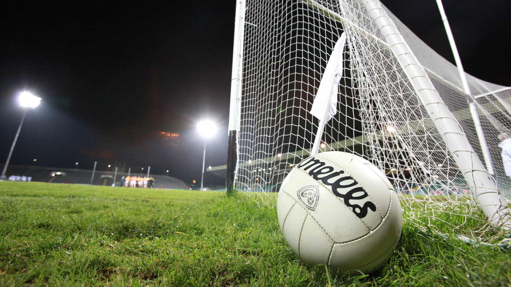

GAA is a big part of my community so naturally I play football.
I've been playing since I was 6 years old. Unfortunately due to
the workload of the Leaving Cert I had to sit out the last season
to keep up with my studies. This sacrifice paid off though as I got
my first choice course and am now a student in UCC, where I now
play for the women's team. I absolutely love this sport and hope
to continue with it during my studies.
I developed a love for horses having grown up on a farm.
I started lessons when I was 7 years old.
I have entered numerous show jumping competitions,
but between college and work I haven't had enough free
time to continue with them this year.
During the Summer I'm looking forward to getting back
into the competitions, though I'll need a bit of practice
after taking months out.